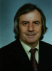

|
Autores / Authors |
BRANDÃO, Adriano
E-mail: brandao.arouca@sapo.pt

Prof. Doutor ADRIANO DE JESUS BRANDÃOFiliação: João da Costa Tavares Brandão
e Luciana Rosa de JesusNascimento: 22 de Outubro de 1947
Naturalidade: Rossas-Arouca
Nacionalidade: Portuguesa
Estado Civil: Casado, 4 filhos
Bilhete de Identidades: 3220787
Telefone: 256943166 ou 936390718
Morada: Leira Longa, Burgo, 4540 Arouca- PORTUGAL
SITUAÇÃO PROFISSIONAL
- Membro convidado da Escola doutoral E.A.D: 653/CRPPC, de Lyon II, pertencendo à equipe de investigação: Equilibre et déséquilibres Psychosomatiques.
PROFESSOR ASSOCIADO,
IV escalão, no ISMAI
Regente de Psicopatologia, Psicologia do Desenvolvimento e Métodos e Técnicas Terapêuticas, na Licenciatura de Psicologia. Colaborador científico com os professores Gérad Broyer, Serge Portalier, Jacques Gaucher, Instituto de Psicologia da Universidade de Lyon II, na orientação de teses do Doctorat (3)+(1) DEA.
SUPERVISOR
- Estágios e monografias de Psicologia clínica, ISMAI.
COORDENADOR
Da Licenciatura de Psicologia
Experiência Profissional:
Docência: Membro do Júri da dissertação do DEA de Psychopathologie et Psychologie Clinique – La qualité du désir sexuel chez le handicapé et la problématique des valeurs morales, université Lumière- Lyon 2 da Lic. Do ISMAI, Natacha Teixeira, Setembro 2002.
- Arguente da dissertação do Mestrado em Famílias e Sistemas sociais, Vinculação e satisfação familiar do toxicodependente, Instituto Miguel Torga, da Lic. Helena Sofia Pires de Almeida Catarino, Julho de 2002.
- Argumente da dissertação do Mestrado em Família e sistemas sociais, Sistema Familiar, Hábitos dos Jovens e consumo de Álcool, da lic. Matilde Maria Carvalho da Costa, Julho de 2002.
- Co-director duma tese de doutoramento com o Prof. Sérge Portalier, no Instituto de Psicologia da U. Lyon II, 2001/02 da Me. Valéria Gomes.
- Co-director duma tese de doutoramento com o Prof. Jacques Gaucher no Instituto de Psicologia da U. Lyon II, 2001/02 da Me. Alexandra Lobo Silva.
- Co-director duma tese de DEA com o professor Gérard Broyer e Professor Serge Portalier, da lic. Natacha Teixeira, sobre a qualidade de vida e sexualidade no âmbito da deficiência 2001-02. Dissertação/avaliação em 09/09/2002.
- Membro do júri do DEA da U. Lyon e co-director da tese da Licª. da Alexandra Lobo, Setembro de 2001.
- Membro do júri do DEA na U. Lyon e co-director da tese do DEA da Licª. Valéria Gomes, Julho de 2001.
- Arguente da dissertação do Mestrado em Sociopsicologia da Saúde, Instituto Miguel Torga, da Lic. Idalina Amaro, Fevereiro de 2001.
- Arguente da dissertação do Mestrado em Sociopsicologia da Saúde, Instituto Miguel Torga, do Lic. Lourenço Amaral, Janeiro de 2001.
- Supervisor do projecto de investigação da Professora Maître de Conference de L’université de Rouen, Sylvie Laroche, Pos-Doc. Na UADIP- Porto, 2000/01.
- Co-director duma tese de doutoramento com o Prof. Gérard Broyer, no Instituto de Psicologia da U. Lyon II, 2000/01/02, do Me. Rui Duarte.
- Co-director duma tese de DEA com o Prof. Jacques Gaucher no Instituto de Psicologia da U. Lyon II, 2000/01, da Lic. Alexandra Silva.
- Co-director duma tese de doctorat de Nouveau Regime- Lyon II, 1999/00, com Prof. Serge Portalier, do Me. Eurico Silva.
- Co-director duma tese de D.E.A. na Universidade de Lyon II com Prof. Serge Portalier 1999/2000 e 2000/01, da Lic. Valéria Gomes.
- Co-director duma tese de D.E.A. na Universidade de Lyon II, 1999/00, com Prof. Gérard Broyer, do Lic. Rui Duarte.
- Membro do Júri de tese do Mestrado, em Psicopatologia Clínica, Universidade Lumière Lyon II e orientador da investigação feita no Hospital Pedro Hispano, 1999-2000, do Lic. Rui Duarte.
- Admitido ao concurso para Professor associado, Instituto de Educação e Psicologia, U. M. Conforme Rt-428/97, Ref. N.º 004599 de 03-03-97, Reitoria da U. Do Minho. Aguarda execução do Acordão do TCA, por parte da U.M., 1999.
- Director do Departamento de Ciências Políticas e do Comportamento, UFP, Porto, 1994/95.
- Professor titular No Inst. Erasmus- Porto, Psicopatologia e Avaliação da Inteligência e Personalidade, 1993/95.
- Professor convidado no Departamento de Ciências da Educação, Universidade de Aveiro, Psicologia do desenvolvimento Educação Especial 1992/93/94. Membro da Unidade de Investigação do Departamento de Ciências de Educação, 1993-96.
- Professor convidado na Faculdade de Psicologia, avaliação da inteligência e personalidade 1991/92, Universidade do Porto(aguarda resolução do caso).
- Docente na área de Educação Especial na E.S.E.F. do Porto, 1991/92.
- Docente de E.S.E.F. – Escola Superior de Educação de Fafe, 1990/93 Professor Coord. Dinâmica de Grupos e Psicologia da Desenvolvimento, e Presidente do C. Científico.
- Docente de Psicossociologia dos Grupos Restritos no ISSS, Lisboa-1990/91- Terapia de grupo.
- Docente e “ Attaché de recherche”, Universidade de Lyon II, França, 1984-1990, colaborador do Prof. Jean BERGERET, na Área de Psicopatologia Clínica e preparação do doutoramento.
NB: Elaborou todos os conteúdos programáticos das disciplinas e formas de avaliação dos respectivos alunos.
Docência principal. professor de Psicopatologia, P. Desenvolvimento e Investigação, nas referidas instituições onde leccionou.
Tempo de serviço na docência à 19 anos completos.
Actividade clínica:
- SUPERVISOR dos estágios e monografias de Psicologia Clínica do ISMAI, (1997/98/99/2000/01/02).
- SUPERVISOR do Centro de Psicologia e Apoio Psicopedagógico, sede- Via Belmiro Azevedo, 47,-4475-142- C.MAIA, 2000/01/02.
- Supervisor do Estágios profissional da Drª Zenaide Rute de Sousa-1998-1999. cf. certificado da ARS-N-Porto.
- Exerce funções de Psicólogo Clínico por conta própria desde 1990, Oporto Center Medical- Porto, 2001/02.
- Secretário Geral, 1988-90, membro fundador e membro do Conselho Científico do «Institut de Recherches Européen sur les facteurs de risque chez l’enfant et l’adoIescent».
- Psicólogo investigador, em Psicopatologia Clínica, no Centro de Psicoterapia de Dijon e no « Centro de Vinatier, Lyon », de 1983 a 1990, tendo-se ocupado dos casos neuróticos (histerismo) entre a população «psicótica». Estágio de psicólogo clínico.
- Estágio em 1980/82, Clinique Le Coteau des Balmes, em Pont-Claix - Grenoble, França, na Unidade de Tratamento do Doutor Robert Chatelain, com nota de louvor, pelo trabalho feito na investigação, serviço de Neuro-psiquiatria, tendo-se ocupado da psicopatologia histérica.
- Estágio em 1979/80, Centre Hospitalier de Chambéry de Santé Mentale, (casos neuróticos) França.
Intervenções científicas:
- Prelector « une journée d’étude sur le théme » Avoir ou être un corps, organizada pelos membros de l’équipe de recherche : « Equilibre et déséquilibres psychosomatiques », IRISH-CRPPC E.A.D. nº 653, Université Lyon2, 07/12/2001.
- Prelector no seminário organizado pelo núcleo de estágio de EF- ISMAI, Escola Secundária do Castelo da Maia, 14 de Março de 2001 com o tema, Motivação para a Profissão Docente.
- Conferencista na acção de Formação para Professores promovido pela Nordeste Centro- Macedo de Cavaleiros, 7 de Fevereiro de 2001, com o tema: Formação sexual e desenvolvimento humano.
- Membro e conferencista da comissão organizadora do Encontro sobre a Investigação Científica, no Ensino Superior, SNESUP, Dezembro, 2000, Lisboa.
- Conferencista no seminário Nacional da A.N.P.E.S., 23 e 24 de Novembro 2000, Fórum da Maia, com o tema: Formação ou Educação Sexual.
- Conferencista no VIII Encontro Distrital da ANP, 26 e 27 de Outubro 2000- Viseu, com o tema : Desequilíbrio relacional do docente perante o aluno.
- Conferencista nas 1as jornadas de Psiquiatria- A Depressão, com o tema :A depressão nos técnicos de saúde. - Clipóvoa, Dezembro 2000.
- Responsável científico do congresso Europeu- Liberalização da Droga: Questão política ou científica, Abril, 1999, ISMAI.
- Conferencista no 1º Congresso Internacional de Motricidade humana, realizado pela SPMH, Setembro, 1999, Almada.
- Conferencista e coordenador científico no congresso de Psicopatologia, Sexualidade: imagens e representações, Ismai, Dezembro de 1997,onde estiveram presentes 9 países da U.E.
- Conferencista no congresso “Profissionais e infância na Europa”, Torino, Maio 1996.
- Conferencista no Congresso internacional de sobredotados, ISMAI, Outubro 1996.
- Conferencista no 1º Encontro Franco - Português de Psicopatologia clínica, ISMAI, Maia, Maio 1996, e coordenador científico.
- Membro du comité scientifique international, in colloque international- “La Personne Handicapée: D’objet à sujet, de l’intention à l’acte”, organizado pela U. Lyon II, Setembro, 1996.
- Conferencista no Congresso da AESMEAF - Neuchatel, Suiça, Abril, 1995.
- Conferencista no 1º Congresso Europeu- Deficientes intelectuais na Europa de 2000, Milano, Itália, Maio, 1995.
- Conferencista e organizador do IV Congresso Europeu da AESMFAF - Universidade de Aveiro, Setembro, 1994.
- Prelector no II Workshop «Uso/abuso de Drogas» nos dias 9 de Fevereiro, 22 e 23 de Março de 1993, no Estoril.
- Supervisor do Projecto NASCER, Na Fundação Portuguesa para o Estudo, Prevenção e Tratamento da Toxicodependência, Cascais - 1992.
- Intervenção em Constantine, Argélia, 26/28 de Novembro, 1990: «A responsabilidade do Psicólogo na Deficiência Mental».
- Intervenção em Argel, Argélia, 8/10/1990. «A criança emotiva e sensível no ano 2000».
- Responsável científico de um debate na Assembleia da República em 11 e 12 de Maio de 1990, sobre os Riscos da Criança e do Adolescente e como os Prevenir.
- Responsável pela organização do 1 Congresso EUROPEU da «Prevenção Primária Integrada », em Veneza, no ano de 1989.
MEMBRO DE ASSOCIAÇÕES
- IREFREA- (Instituto Europeu dos fatores de risco da criança e adolescente) membro fundador e membro do conselho científico, sede em Lyon, França.
- AESMEAF- membro do conselho científico, e C. Administrativo sede em Luxemburgo.
- World Federation For Mental Health, membership, sede nos U.S.A.
- MLP-Pró-Ordem- Presidente da Assembleia Geral, membro fundador.
- CRHES- Collectif de Recherches sur le Handicap et l’Éducation Spécialisée- U. Lyon II, Membro e investigador. (erma 2 e 4)
- Sociedade Portuguesa de Psicologia Clínica - Lisboa.
- PRO et PSY - Association de professionnels et étudiants en Psychologie – NICE.
- SNESUP- Sindicato nacional do ensino superior, Conselheiro Nacional e delegado sindical- ISMAI. Presidente da Assembleia Geral e do conselho Nacional a partir de Julho de 2001.
HABILITACÕES ACADÉMICAS
- Tese de Doutoramento “Nouveau Regime” / ETAT, em Psicopatologia Clínica, sob a orientação do Prof. Doutor Jean Bergeret, LA PSYCHOPATOLOGIE HYSTERIQUE CHEZ LA FEMME, apresentada em 26 de Setembro de 1 990, aceite por unanimidade do júri composto pelos profs. Jean Claude SAGNE, Jean BERGERET, Marcel COLLIN, Paul BROUSSOLE, Guy DARCOURT, Gérard BROYER, tendo sido classificada com uma classificação de "Très Honorable", publicada pelo serviço nacional de teses de França. (cf. Internet)
- DEA à Diploma de Estudos Aprofundados de Psicopatologia Clínica da Universidade de Lyon II , obtido em l985 com a classificação de 16/20 (menção de M. Bom).
- Maîtrise de Psicologia: C4 Psicologia do desenvolvimento, (Piaget-Longeot) na Universidade de Grenoble II ( com 4 disciplinas ), 1982.
- "Maîtrise" de Psicopatologia: C3 Psicopatologia Clínica, na Universidade de Grenoble II ( com 4 disciplinas ), 198l.
- Licence de Neuropsychologie: C2 Certificat d'Études Supérieures de Neuropsychologie, na Universidade de Grenoble 1 ( com 4 disciplinas ), 1980.
- Licence de Psychologie: CI Psicologia Comparada e Patológica, na Universidade de Grenoble II (com 6 disciplinas), 1980.
- 7º ano do Liceu, feito em Coimbra, D. João III.
- BACCALAUREAT- Grenoble- França.
EQUIVALÊNCIAS
- Em 3 de Abril de 1991, a Universidade do Porto atribuiu o grau de Doutor em Saúde Mental, por unanimidade do júri, mediante apresentação do certificado de "DOCTEUR en Psychologie, mention Psychopathologie", sem qualquer restrição.
- Em 1987, a Universidade do Porto atribuiu o grau de Mestre em Psicologia Clínica, mediante a apresentação do "DEA" ( obtido na Universidade de Lyon II ), por unanimidade do Júri e sem qualquer restrição (DEA composto por 3 disciplinas + dissertação).
- Em 1986, a Universidade do Porto atribuiu o grau de Licenciado, com 14 valores, mediante a apresentação da "MAITRISE" , (duas “maîtrises” compostas por 4 disciplinas cada e com uma dissertação, sobre a histeria, U. Grenoble).
- Em 1981, pelo despacho n.º 64/81 de Maio, do Secretário de Estado do Ensino Superior, foi dada equivalência a Curso Superior, mediante a apresentação do Certificado da "LICENCE", da U. de Grenoble.
--NB: No mestrado e doutoramento foi mantida a menção da U. Lyon II. Très bien 16/20 e très honorable.
PUBLICACÕES
2002- Handicap et qualité du désir sexuel, in Avoir ou être un corps, N. Dumet et G. Broyer, Psychologies, Lyon 2002.
2001/02 - A sebenta de psicologia do Desenvolvimento I e II.
2001/02 - A sebenta de Psicopatologia I e II.
NB: As duas sebentas são publicadas pelo próprio com renovação todos os anos.
- “Exclusividade ou feudalismo” in Boletim do Snesup, n.º53, 2000, Lisboa.
- “QuelIe vie affective et familiale pour la personne handicapée”, in actes du colloque international, La Personne Handicapée, U. Lyon II, Setembro, 1998.
- “Desenvolvimento e dignidade sexual", apresentado na RTP 2, de Dezembro de 1997, Congresso de Psicopatologia, ISMAI. Dezembro, 1997. In Perspectivas XXI, nº1, 1998.
- “A criança sobredotada: Dificuldades de integracção” in Actas do II congresso Internacional de Sobredotação, Outubro, 1996- APEPICTA- Porto.
- “O PEC" in Textos do IV Congresso Europeu da AESMAEF', U.
Aveiro, 1996, e in Boletim - APEPICTA, N.º 0, Outubro, 1996.
-“Dignita della persona con handicap”, Congresso Europeu dos deficientes intelectuais, Milano, Junho, 1995.
- “ Besoins de Bases” in Actes du Congrès des Equipements pour
Handicapés, Neuchatel, Suíça, Abril 1995.
- Responsável pelos textos em língua Francesa, in Textos do IV congresso Europeu da AESMAEF, Aveiro, 1994.
- “Problemática Psico-sociológica da família” in Roda Viva, 1993.
- “Droga legal”, in Roda Viva, 1993.
- “O comportamento assustador da juventude”, série de artigos publicados in Roda Viva, 1992/93.
- “Toxicodependência e a Prevenção Primária Integrada”, in Livro branco da Toxicodependência, G.C. de Lisboa, 1992.
- “A responsabilidade do Psicólogo na deficiência Mental”, in Actas do II Congresso de Língua Árabe, Constantine, Argélia, 1990 (em língua árabe).
- “Vejamos a droga sem ódio”, artigo publicado depois de várias intervenções para jovens, in Roda Viva, 1990.
- La Psychopathologie Hystérique chez la Femme. Essai de Compréhension Economique, tese de Doutoramento, 1990, (tese publicada pelo Serviço Nacional de Teses de França, n.º de referência 860 1032y, segundo indicação do júri cf. Internet).
- Estudo do comportamento e Formas de Prevenção para a Juventude, trabalho feito para o Ministério da Juventude em 1989.
- “A Biografia de uma Esquizofrénica” artigo feito em colaboração com o Professor Jean BERGERET in Psicologia Clínica, n.º 2, Coimbra, 1989 .
- La Psychothérapie chez la Jeune femme hystérique et ses Limites, tese de Mestrado, 1985, publicação da U. de Lyon II.
Outras informações úteis:
- 2º Ano de direito da U. De Dijon.
- Bilingue, Francês/Português (26 anos de trabalho em França)
- Compreende e lê Inglês, Italiano e Espanhol.
- Bons conhecimentos de Latim e Grego clássico.
- Bons conhecimentos em matemática aplicada às ciências sociais, U. Grenoble niveau Licence.
- Bom conhecimento da sociedade Angolana, Belga, Espanhola, Francesa e Italiana.
Questões pertinentes como investigador:
- Psicossomática
- Sexualidade nas populações deficitárias.
- Formação sexual a nível das populações escolarizadas.
Arouca , 2002.02.07